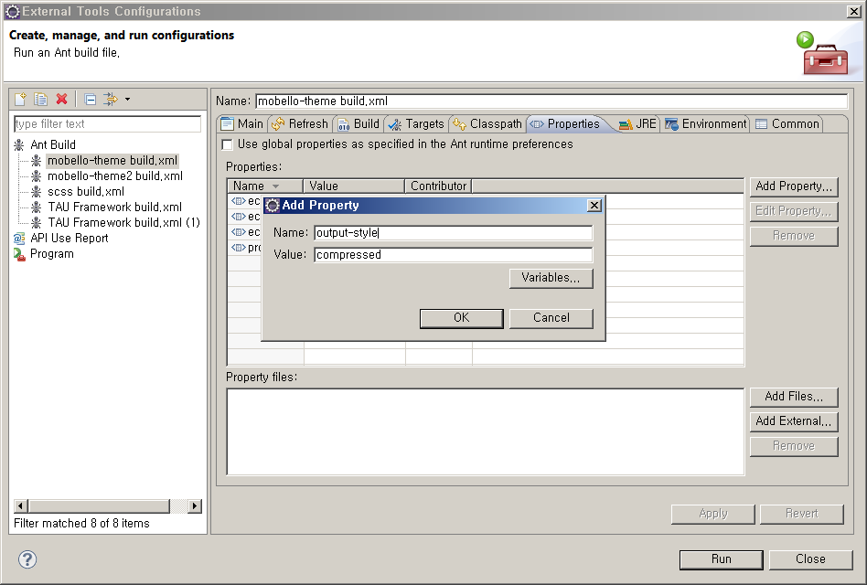
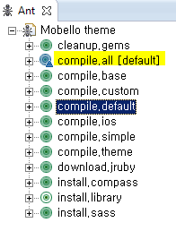
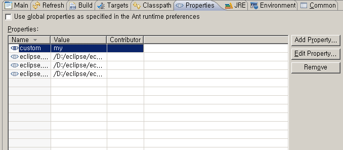

theme을 컴파일하기 위해서는 Sass & Compass 설치 가이드 를 참고하셔서 theme 컴파일 환경을 구성해야 합니다. |
이 문서는 기본 테마를 컴파일하고, 추가한 테마를 컴파일하는 방법에 대해서 소개합니다.
theme을 컴파일하기 위해서는 Sass & Compass 설치 가이드 를 참고하셔서 theme 컴파일 환경을 구성해야 합니다. |
목차:
build.xml에 projectdir property 속성에 대한 value값을 설정해 주어야 합니다.이 값은 Mobello Application Project의 절대경로로 지정해 주시면 됩니다.

css output style은 다음 스타일을 제공합니다. 기본값은 compressed입니다.

테마를 컴파일하기 위해서는 compass.compile.테마명 ant를 수행하시면 됩니다.
default, ios, simple, custom 테마 모두 컴파일하려면 compile.all을 수행하시면 됩니다.
컴파일이 완료되면 Mobello Application Project에 lib > resource > themes > 테마명 폴더에서 tau.css 파일이 새로 생성된 것을 확인할 수 있습니다.
 |
|
기존 테마폴더를 복사해서 폴더명 변경, 해당 값만 변경하시면 빠르게 작성할 수 있습니다. |
사용자가 추가적으로 theme을 생성하기 위해서는
tau.scss 파일을 작성합니다.
@import '../../lib/all'; 꼭 작성해야 합니다.
... @import '../../lib/all'; ...
추가된 theme이 하나인 경우에는 custom property값을 설정하면 간단하게 컴파일 할 수 있습니다.

추가한 테마가 여러개인 경우에는 build.xml에 target name이 compile.default 을 복사해서 target name, path정보만 수정하시면 됩니다.
default만 해당 테마명으로 변경하시면 됩니다.
param value를 해당 테마명으로 변경합니다.
<target name="compile.테마명" description="compile">
<antcall target="compile.theme">
<param name="theme" value="테마명"/>
</antcall>
</target>
또한 compile.all에 적용하려면 depends에 target name을 추가하시면 됩니다.
<target name="compile.all" depends="compile.base, compile.default, compile.simple, compile.ios, compile.custom, compile.테마명">